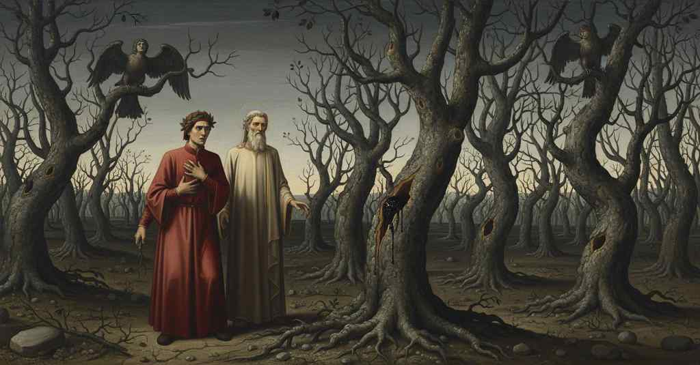

Inferno — Canto 13

Nel secondo girone Dante e Virgilio attraversano la selva dei suicidi, dove Pier della Vigna narra la propria caduta e la pena delle anime mutate in alberi, mentre Iacopo da Santo Andrea viene sbranato dalle cagne infernali. In the second round, Dante and Virgil cross the wood of the suicides, where Pier della Vigna recounts his downfall and the punishment of souls turned into trees, while Jacopo da Santo Andrea is torn apart by infernal hounds. 第二の環で、ダンテとウェルギリウスは自殺者たちの森を進み、そこでピエール・デッラ・ヴィーニャは自らの失脚と木に変えられた魂たちの罰を語る一方、ヤコポ・ダ・サント・アンドレアは地獄の猟犬に引き裂かれる。
1
Non era ancor di là Nesso arrivato,
Nessus had not yet arrived on that side,
ネッソスがまだ向こう岸に着かぬうちに、
2
quando noi ci mettemmo per un bosco
when we put ourselves into a wood
我らはある森へと足を踏み入れた、
3
che da neun sentiero era segnato.
that was marked by no path.
そこにはいかなる小道も記されていなかった。
4
Non fronda verde, ma di color fosco;
Not green leaves, but of a dusky color;
緑の葉はなく、暗い色の葉。
5
non rami schietti, ma nodosi e ’nvolti;
not straight branches, but knotty and twisted;
まっすぐな枝はなく、節くれだってねじれた枝。
6
non pomi v’eran, ma stecchi con tòsco.
no fruits were there, but twigs with poison.
果実はなく、毒のある刺だった。
7
Non han sì aspri sterpi né sì folti
Not so harsh thickets nor so dense have
これほど険しく、これほど密な茂みを持たない
8
quelle fiere selvagge che ’n odio hanno
those wild beasts that hold in hatred
かの野獣たちも、憎んでいるのは
9
tra Cecina e Corneto i luoghi cólti.
between Cecina and Corneto the tilled lands.
チェーチナとコルネートの間の耕作地である。
10
Quivi le brutte Arpie lor nidi fanno,
Here the ugly Harpies make their nests,
ここに醜いハルピュイアたちは巣を作り、
11
che cacciar de le Strofade i Troiani
who drove from the Strophades the Trojans
かの者たちはストロファデスからトロイア人らを追い出した、
12
con tristo annunzio di futuro danno.
with a sad announcement of future harm.
未来の災いを告げる悲しき知らせと共に。
13
Ali hanno late, e colli e visi umani,
They have wide wings, and human necks and faces,
広い翼を持ち、首と顔は人間で、
14
piè con artigli, e pennuto ’l gran ventre;
feet with claws, and the great belly feathered;
足には鉤爪があり、大きな腹は羽毛に覆われている。
15
fanno lamenti in su li alberi strani.
they make laments upon the strange trees.
奇妙な木々の上で嘆きの声をあげている。
16
E ’l buon maestro «Prima che più entre,
And the good master: “Before you enter farther,
そして善き師は「これ以上中へ入る前に、
17
sappi che se’ nel secondo girone»,
know that you are in the second round,”
知るがよい、お前は第二の環にいるのだと」
18
mi cominciò a dire, «e sarai mentre
he began to say to me, “and you will be until
と私に語り始めた、「そしてここにいるだろう、
19
che tu verrai ne l’orribil sabbione.
you come to the horrible great sand.
お前があの恐ろしい砂原に至るまで。
20
Però riguarda ben; sì vederai
Therefore look well; so you will see
それゆえ、よく見るがよい。そうすれば見るだろう
21
cose che torrien fede al mio sermone».
things that would take belief from my speech.”
我が言葉への信頼を奪うような物事を」。
22
Io sentia d’ogne parte trarre guai
I heard wails drawn from every side
私はあらゆる方角から嘆きが発せられるのを聞いたが、
23
e non vedea persona che ’l facesse;
and saw no person who was making them;
それをする者を誰も見なかった。
24
per ch’io tutto smarrito m’arrestai.
wherefore, all bewildered, I stopped.
そのため私はすっかり途方に暮れて立ち止まった。
25
Cred’ ïo ch’ei credette ch’io credesse
I believe that he believed that I believed
私は思う、師は私が信じていると信じたのだと、
26
che tante voci uscisser, tra quei bronchi,
that so many voices came forth, among those trunks,
あれほど多くの声が、この茨の中から、
27
da gente che per noi si nascondesse.
from people who were hiding from us.
我らを避けて身を隠した人々から発せられると。
28
Però disse ’l maestro: «Se tu tronchi
Therefore the master said: “If you break off
それゆえ師は言った、「もしお前が折るならば
29
qualche fraschetta d’una d’este piante,
some little twig from one of these plants,
この植物の一本から小枝をどれか、
30
li pensier c’hai si faran tutti monchi».
the thoughts you have will all be cut short.”
お前の抱く考えは皆、不完全なものとなるだろう」。
31
Allor porsi la mano un poco avante
Then I put my hand forward a little
そこで私は手を少し前に伸ばし、
32
e colsi un ramicel da un gran pruno;
and plucked a small branch from a great thorn-bush;
大きな茨の木から小枝を一本折った。
33
e ’l tronco suo gridò: «Perché mi schiante?».
and its trunk cried out: “Why do you break me?”
するとその幹が叫んだ、「なぜ私を裂くのか？」。
34
Da che fatto fu poi di sangue bruno,
After it then became dark with blood,
それが黒ずんだ血に染まった後、
35
ricominciò a dir: «Perché mi scerpi?
it began again to say: “Why do you tear me?
再び語り始めた、「なぜ私を引き裂くのか？
36
non hai tu spirto di pietade alcuno?
Have you no spirit of pity at all?
お前には一片の慈悲の心もないのか？
37
Uomini fummo, e or siam fatti sterpi:
We were men, and now are made into stumps:
我らはかつて人間だったが、今は乾いた木と成り果てた。
38
ben dovrebb’ esser la tua man più pia,
truly your hand should be more merciful,
お前の手はもっと慈悲深いはずだった、
39
se state fossimo anime di serpi».
had we been the souls of serpents.”
たとえ我らが蛇の魂であったとしても」。
40
Come d’un stizzo verde ch’arso sia
As from a green log that is burning
まるで生木の一片が焼かれているように
41
da l’un de’ capi, che da l’altro geme
at one of its ends, which at the other groans
一方の端から、もう一方の端は呻き、
42
e cigola per vento che va via,
and hisses for the wind that escapes,
そして逃げていく風でシューシューと鳴るように、
43
sì de la scheggia rotta usciva insieme
so from that broken splinter came forth together
そのように折られた裂け目からは共に出てきた
44
parole e sangue; ond’ io lasciai la cima
words and blood; at which I let the tip
言葉と血が。ゆえに私はその先端を
45
cadere, e stetti come l’uom che teme.
fall, and stood like the man who fears.
落とし、恐怖する者のように立ち尽くした。
46
«S’elli avesse potuto creder prima»,
«If he had been able to believe before,»
「もし彼が、先に信じることができていたなら、」
47
rispuose ’l savio mio, «anima lesa,
replied my sage, «O wounded soul,
我が賢師は答えた、「傷ついた魂よ、
48
ciò c’ha veduto pur con la mia rima,
what he had seen only in my rhyme,
私の詩によってのみ見たことを、
49
non averebbe in te la man distesa;
he would not have stretched out his hand against you;
おまえに向けて手を伸ばすことはなかっただろう。
50
ma la cosa incredibile mi fece
but the incredible thing made me
しかし、信じがたい事であったがゆえに、私は
51
indurlo ad ovra ch’a me stesso pesa.
induce him to a deed that weighs on me myself.
私自身にも重荷となる行いへと彼を導いたのだ。
52
Ma dilli chi tu fosti, sì che ’n vece
But tell him who you were, so that by way of
だが、おまえが誰であったかを彼に告げよ、そうすれば償いの代わりに
53
d’alcun’ ammenda tua fama rinfreschi
some amends he may refresh your fame
おまえの名声を新たにしてくれよう
54
nel mondo sù, dove tornar li lece».
in the world above, where he is permitted to return».
彼が戻ることを許された、上の世で。」
55
E ’l tronco: «Sì col dolce dir m’adeschi,
And the trunk: «So with sweet speech you entice me,
そして幹は言った。「その甘い言葉で私を誘うので、
56
ch’i’ non posso tacere; e voi non gravi
that I cannot be silent; and may it not burden you
私は黙っていることができない。そしてあなた方が
57
perch’ ïo un poco a ragionar m’inveschi.
that I am lured into a little speech.
私が少し語ることに心を囚われても、重荷に思わぬように。
58
Io son colui che tenni ambo le chiavi
I am he who held both the keys
私は、フェデリーゴの心の
59
del cor di Federigo, e che le volsi,
of Frederick’s heart, and who turned them,
二つの鍵を共に握り、それを回した者だ、
60
serrando e diserrando, sì soavi,
locking and unlocking, so gently,
閉ざしまた開け、実に巧みに、
61
che dal secreto suo quasi ogn’ uom tolsi;
that from his secrets I kept almost every man;
その秘密からほとんど全ての人を遠ざけた。
62
fede portai al glorïoso offizio,
I bore faith to the glorious office,
私はその輝かしい職務に忠誠を尽くし、
63
tanto ch’i’ ne perde’ li sonni e ’ polsi.
so much that I lost my sleep and my pulses for it.
そのために眠りも脈も失うほどだった。
64
La meretrice che mai da l’ospizio
The harlot who never from the dwelling
カエサルの館から
65
di Cesare non torse li occhi putti,
of Caesar turned her tainted eyes,
その淫らな目を決して逸らさぬ娼婦、
66
morte comune e de le corti vizio,
the common death and vice of courts,
すべての死を招き、宮廷の悪徳であるものが、
67
infiammò contra me li animi tutti;
inflamed against me all the spirits;
私に対して皆の心を燃え立たせた。
68
e li ’nfiammati infiammar sì Augusto,
and they, inflamed, so inflamed Augustus,
そして燃え立った者たちはアウグストゥスを燃え立たせ、
69
che ’ lieti onor tornaro in tristi lutti.
that my joyous honors turned to sad laments.
喜ばしい名誉は悲しい喪に変わった。
70
L’animo mio, per disdegnoso gusto,
My spirit, from a disdainful taste,
私の魂は、侮蔑的な気質から、
71
credendo col morir fuggir disdegno,
believing by dying to flee disdain,
死ぬことによって侮蔑から逃れられると信じ、
72
ingiusto fece me contra me giusto.
made me unjust against my just self.
正しい私に対して私を不正にした。
73
Per le nove radici d’esto legno
By the new roots of this wood
この木の新しい根にかけて
74
vi giuro che già mai non ruppi fede
I swear to you that I never broke faith
あなた方に誓う、私は決して信義を破らなかったと
75
al mio segnor, che fu d’onor sì degno.
with my lord, who was so worthy of honor.
それほどまでに名誉に値した我が主君に対して。
76
E se di voi alcun nel mondo riede,
And if one of you returns to the world,
そして、もしあなた方の誰かが世に戻るなら、
77
conforti la memoria mia, che giace
let him comfort my memory, which still lies
私の記憶を慰めてほしい、それは未だに
78
ancor del colpo che ’nvidia le diede».
prostrate from the blow that envy gave it».
嫉妬が与えた一撃のもとに倒れているのだから。」
79
Un poco attese, e poi «Da ch’el si tace»,
He waited a little, and then, «Since he is silent,»
しばらく待って、そして「彼が黙ったからには」
80
disse ’l poeta a me, «non perder l’ora;
the poet said to me, «do not lose the hour;
詩人は私に言った、「時を失うな。
81
ma parla, e chiedi a lui, se più ti piace».
but speak, and ask of him, if more may please you».
話しかけ、尋ねるのだ、もしもっと聞きたいなら。」
82
Ond’ ïo a lui: «Domandal tu ancora
Whence I to him: «You ask him further
そこで私は彼に言った。「あなたがもう一度尋ねてください
83
di quel che credi ch’a me satisfaccia;
of that which you believe would satisfy me;
私が満足するだろうとあなたが思うことを。
84
ch’i’ non potrei, tanta pietà m’accora».
for I could not, such pity pierces my heart».
私にはできない、それほど憐れみが心を痛めるので。」
85
Perciò ricominciò: «Se l’om ti faccia
Therefore he began again: «So may the man do for you
それゆえ彼は再び始めた。「この者が、おまえの言葉が願うことを
86
liberamente ciò che ’l tuo dir priega,
freely what your speech implores,
快くおまえのためにしてくれるように、
87
spirito incarcerato, ancor ti piaccia
O imprisoned spirit, may it please you still
囚われた魂よ、さらに喜んで
88
di dirne come l’anima si lega
to tell us how the soul is bound
教えてはくれまいか、魂がいかにして
89
in questi nocchi; e dinne, se tu puoi,
within these knots; and tell us, if you can,
このような節目に縛られるのか。そして、もしできるなら、
90
s’alcuna mai di tai membra si spiega».
if any ever from such limbs is set free».
いつかこの肢体から解き放たれる魂がいるのかを。」
91
Allor soffiò il tronco forte, e poi
Then the trunk blew strongly, and then
すると幹は強く息を吹き、そして
92
si convertì quel vento in cotal voce:
that wind was converted into such a voice:
その風はこのような声に変わった。
93
«Brievemente sarà risposto a voi.
«Briefly shall you be answered.
「簡潔にあなた方にお答えしよう。
94
Quando si parte l’anima feroce
When the fierce soul departs
獰猛な魂が、自ら引き裂いた
95
dal corpo ond’ ella stessa s’è disvelta,
from the body from which it has torn itself,
肉体から離れると、
96
Minòs la manda a la settima foce.
Minos sends it to the seventh mouth.
ミノスはそれを第七の入り口へ送る。
97
Cade in la selva, e non l’è parte scelta;
It falls into the wood, and no part is chosen for it;
それは森に落ち、場所は選ばれない。
98
ma là dove fortuna la balestra,
but there where fortune flings it,
運命がそれを投げつけた場所に、
99
quivi germoglia come gran di spelta.
there it sprouts like a grain of spelt.
そこでスペルト小麦の粒のように芽吹く。
100
Surge in vermena e in pianta silvestra:
It rises into a sapling, and a wild plant:
若枝となり、野生の木となる。
101
l’Arpie, pascendo poi de le sue foglie,
the Harpies, then feeding on its leaves,
ハルピュイアが、その葉を食らうことで、
102
fanno dolore, e al dolor fenestra.
make pain, and for the pain a window.
痛みを与え、その痛みに窓を開けるのだ。
103
Come l’altre verrem per nostre spoglie,
Like the others we shall come for our cast-off bodies,
他の者たちのように、我らも自らの肉体を取りに来るだろう、
104
ma non però ch’alcuna sen rivesta,
but not, however, that any may clothe himself with it,
だが、誰もそれを再び纏うことはない。
105
ché non è giusto aver ciò ch’om si toglie.
for it is not just to have what one has taken from oneself.
自ら捨てたものを持つのは正しくないからだ。
106
Qui le strascineremo, e per la mesta
Here we shall drag them, and through the mournful
ここへ我らはそれを引きずってきて、そして悲しみの
107
selva saranno i nostri corpi appesi,
wood our bodies will be hung,
森の中で、我らの肉体は吊るされるだろう、
108
ciascuno al prun de l’ombra sua molesta».
each on the thorn-bush of its grievous shade».
それぞれ、その忌まわしい影の宿る茨の木に。」
109
Noi eravamo ancora al tronco attesi,
We were still waiting by the trunk,
我らはまだその幹のそばで待っていた、
110
credendo ch’altro ne volesse dire,
believing that it wished to say more to us,
彼が他に何か言いたいことがあると信じて。
111
quando noi fummo d’un romor sorpresi,
when we were surprised by a clamor,
その時、我らはある物音に驚かされた、
112
similemente a colui che venire
like one who hears approaching
それはあたかも、待ち伏せ場所でやって来るのを
113
sente ’l porco e la caccia a la sua posta,
the boar and the hunt to his post,
猪と狩りの一行を感じ、
114
ch’ode le bestie, e le frasche stormire.
who hears the beasts, and the branches rustle.
獣と、枝々のざわめきを耳にする者のようだった。
115
Ed ecco due da la sinistra costa,
And behold, two from the left-hand side,
そして見よ、左の方から二人の者が、
116
nudi e graffiati, fuggendo sì forte,
naked and scratched, fleeing so powerfully,
裸で傷だらけで、あまりに速く逃げてきて、
117
che de la selva rompieno ogne rosta.
that they broke every thicket of the wood.
森のあらゆる枝を折り砕いていた。
118
Quel dinanzi: «Or accorri, accorri, morte!».
The one in front: «Now hurry, hurry, death!».
前の者は、「さあ、急げ、急いでくれ、死よ！」。
119
E l’altro, cui pareva tardar troppo,
And the other, who seemed to lag too much,
そしてもう一人は、遅すぎると思ったのか、
120
gridava: «Lano, sì non furo accorte
shouted: «Lano, not so nimble were
叫んだ、「ラーノよ、トッポの馬上槍試合での
121
le gambe tue a le giostre dal Toppo!».
your legs at the jousts of Toppo!».
お前の脚は、あれほど素早くはなかったな！」。
122
E poi che forse li fallia la lena,
And since perhaps his breath was failing him,
そしておそらく息が切れたのだろう、
123
di sé e d’un cespuglio fece un groppo.
of himself and a bush he made one knot.
彼は自身と一つの茂みで塊となった。
124
Di rietro a loro era la selva piena
Behind them the wood was full
彼らの後ろには森が満ちていた
125
di nere cagne, bramose e correnti
of black bitches, eager and running
黒い雌犬たちで、貪欲に走り、
126
come veltri ch’uscisser di catena.
like hounds that had broken from their chains.
鎖から解き放たれた猟犬のようだった。
127
In quel che s’appiattò miser li denti,
Into the one who had hidden they set their teeth,
隠れた者に、彼女らは歯を突き立て、
128
e quel dilaceraro a brano a brano;
and they tore him apart piece by piece;
そして彼をずたずたに引き裂いた。
129
poi sen portar quelle membra dolenti.
then carried off those aching limbs.
それからその痛ましい四肢を持ち去った。
130
Presemi allor la mia scorta per mano,
My guide then took me by the hand,
その時、我が案内人は私の手を取り、
131
e menommi al cespuglio che piangea
and led me to the bush that was weeping
そして私を茂みへと導いた、その茂みは泣いていた
132
per le rotture sanguinenti in vano.
through its bleeding gashes, all in vain.
血を流す傷口から、虚しく。
133
«O Iacopo», dicea, «da Santo Andrea,
«O Jacopo,» it was saying, «da Santo Andrea,
「おお、ヤーコポ・ダ・サント・アンドレアよ」とそれは言った、
134
che t’è giovato di me fare schermo?
what good has it done you to make a screen of me?
「私を盾にして何の得があったのか？
135
che colpa ho io de la tua vita rea?».
what fault have I for your wicked life?».
お前の罪深い生涯に、私に何の咎があるのか？」。
136
Quando ’l maestro fu sovr’ esso fermo,
When the master stood firm above it,
師がその上に立ち止まった時、
137
disse: «Chi fosti, che per tante punte
he said: «Who were you, who through so many points
言った、「汝は何者か、多くの棘から
138
soffi con sangue doloroso sermo?».
breathe out with blood your sorrowful speech?».
血と共に悲痛な言葉を吐き出す者よ？」。
139
Ed elli a noi: «O anime che giunte
And he to us: «O souls who have arrived
そして彼は我らに言った、「おお、訪れた魂たちよ
140
siete a veder lo strazio disonesto
to see the shameful mangling
この不名誉な破壊を見るために
141
c’ha le mie fronde sì da me disgiunte,
that has so disjoined my leaves from me,
我が葉をこのように私から引き離した、
142
raccoglietele al piè del tristo cesto.
gather them at the foot of the sad bush.
この哀れな茂みの足元にそれらを集めてくれ。
143
I’ fui de la città che nel Batista
I was of the city that for the Baptist
私はかの都の者、その都は洗礼者に
144
mutò ’l primo padrone; ond’ ei per questo
changed its first patron; for which he for this
最初の守護神を変えた。それゆえ、彼はこのことで
145
sempre con l’arte sua la farà trista;
will always with his art make it sad;
常にその術をもって都を悲しませるだろう。
146
e se non fosse che ’n sul passo d’Arno
and were it not that on the pass of Arno
そしてもし、アルノ川の渡しに
147
rimane ancor di lui alcuna vista,
there still remains some vision of him,
彼の面影がいくらかでも残っていなければ、
148
que’ cittadin che poi la rifondarno
those citizens who then refounded it
後にそれを再建した市民たちは、
149
sovra ’l cener che d’Attila rimase,
upon the ashes that from Attila remained,
アッティラが残した灰の上に、
150
avrebber fatto lavorare indarno.
would have done their labor all in vain.
無駄な働きをしたことになっただろう。
151
Io fei gibetto a me de le mie case».
I made a gibbet for myself of my own house».
私は我が家々を、自らの絞首台としたのだ」。